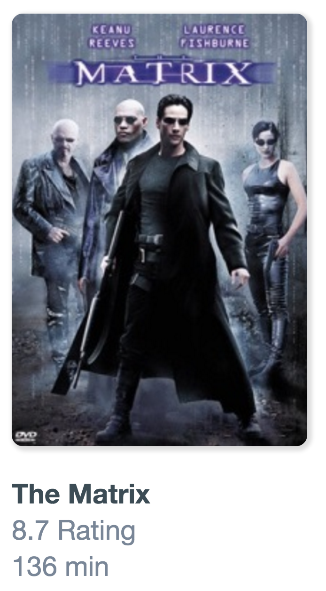

do you know this problem?
raining framework icons
Stefan Jäger
Berne
steivan
stefanjaeger
steivan
stefanjaeger
Christian Kohler
Zurich
KohlerChristian
christiankohler
KohlerChristian
christiankohler
we're tired of new frameworks everyday
can we write a SPA with just web standards?
follow our journey!
let's build an application
Let's start with a component
What do we want?
<movie-tile title="The Matrix" imageurl="img/matrix.png"></movie-tile>
we don't want to use
Angular Directive
React Components
Custom Elements
<beautiful-woman></beautiful-woman>
<div>
<div class="hair-mesh">
<span class="..."></span>
<div class="...">
...
</div>
</div>
<div class="eyes">
<span class="..."></span>
<div class="">
...
</div>
</div>
<div class="lips">
<span class="..."></span>
<div class="">
<div class="...">
<span class="..."></span>
<div class="">
...
</div>
</div>
</div>
</div>
</div>
Custom Element Creation
var BeautifulWoman = Object.create(HTMLElement.prototype);
Custom Element Creation
var BeautifulWoman = Object.create(HTMLElement.prototype);
BeautifulWoman.createdCallback = function() {
this.innerHTML = 'click me!';
this.addEventListener('click', function(e) {
alert('Hello!');
});
};
Custom Element Creation
var BeautifulWoman = Object.create(HTMLElement.prototype);
BeautifulWoman.createdCallback = function() {
this.innerHTML = 'click me!';
this.addEventListener('click', function(e) {
alert('Hello!');
});
};
document.registerElement('beautiful-woman', {
prototype: BeautifulWoman
});<beautiful-woman></beautiful-woman>
CODING TIME
Demo
Movie View
<movie-view> <movie-tile></movie-tile> <movie-tile></movie-tile> <movie-tile></movie-tile> </movie-view>
CODING TIME
How do we get the movie-tile into the movie-view?
Modules
Modules
We have two important standards, namely CommonJS and Asynchronous Module Definition (AMD) which let developers use modules in JavaScript. But, the next JavaScript version, known as ECMAScript 6, brings modules into JavaScript officially.
// utility.js
function generateRandom() { return Math.random(); }
function doSum(a, b) { return a + b; }
export { generateRandom as random, doSum as sum }
// app.js
import { random, sum } from 'utility';
import 'utility' as utils; // alternativelyCODING TIME
Demo
Let's use real data. Can we use $http?
Fetch API
Disclaimer

This is an experimental technology :-)
Fetch API
It is a living standard!
http://fetch.spec.whatwg.org
There is a polyfill!
https://github.com/github/fetch
function reqListener() {
var data = JSON.parse(this.responseText);
console.log(data);
}
function reqError(err) {
console.log('Fetch Error :-S', err);
}
var oReq = new XMLHttpRequest();
oReq.onload = reqListener;
oReq.onerror = reqError;
oReq.open('get', './api/some.json', true);
oReq.send();
fetch('./api/some.json')
.then(function(response) {
return response.json();
})
.then(function(data) {
console.log(data);
})
.catch(function(err) {
console.log('Fetch Error :-S', err);
});
fetch('https://.../discover/movie?runtimeFrom=6528&runtimeTo=8160') // and an API Key :-)
.then(function(response) {
...{
"movies": [
{
"imdbID":"tt4733046",
"title":"The Weight of Chains 2",
"year":"2014",
...
},
{
"imdbID":"tt4514084",
"title":"Far Too Far",
"year":"2015",
...
}
]
}CODING TIME
Demo
introducing Search View
Use Google Maps Api to get the duration
CODING TIME
Demo
App Component
The app is also a component
CODING TIME
Router
can we use ng-route?
unfortunately there is no standard (yet)
do it yourself!
CODING TIME
Final App Demo
The good, the bad and the ugly
The good ..
1. No dependencies
No breaking changes, no wait time for bug fixes, no aging libraries

The good ..
2. No need to learn a library or a framework
No learning curve, just pure javascript

.. the bad ..
1. Difficult to test (No dependency injector, just ES6 Modules)
import myservice from './services/myservice'
2. Browser support for custom elements is bad (48%)

.. and the ugly.
You would end up writing your own library / framework
The router for example

Good
Bad
Frameworks
Good
Bad
Ugly Parts
Aurelia
● ES6, ES7
● Web Components
● No external dependencies (except polyfills)
● Simple conventions
jspm.io
bootstrapper
aurelia-router
<template>
Vanilla SPA
<template>
HTMLTemplateElement


<template>
@inject
Search
<template>
@inject
movie-tile
Movie
Delta Vanilla SPA - Aurelia
● Dependency Injection with @inject
● Two Way Databinding with @bindable
● Aurelia Bootstrapper and Aurelia Router
Lessons Learned
- If you don't need to support older browsers you can build a single page application almost without any additional libraries.
- Frameworks make it easier for you to write tests!
- Adopt ECMAScript 6 either natively or use transpilers such as Babel.
- Building applications with next gen framework requires less framework specific code.